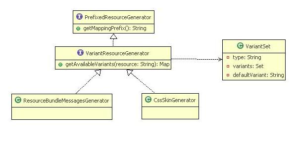

One of the key features of Jawr is its ability to bundle resources and to provide variation of the same bundle depending on the user request.
A good example of variant bundle is the locale variant bundle generated by the i18n messages script generator (Full documentation of the message generator is here). These bundles have different content depending on the user locale.
So a variant bundle is a bundle which can have different content depending on the user request (cookie, parameter, browser type...). Jawr provides 2 ways for the user to define variant bundles using the public Jawr API :
The main idea to understand is how variants are defined for a bundle. In Jawr, we are using a map of variants for a bundle. This map has as key the type of variant (locale, skin, browser, ...). The value associated is a VariantKeySet. A VariantSet is an object containing the set of values available for a defined variant type, and it contains also the default variant value to use.
I will discuss later about the default value strategy. For the rest of the document, I will notate the VariantSet content as [ "defaultValue", "value1", "value2" ].
So here the VariantSet contains defaultValue, value1 and value2 and the value in bold is the default value.
To be clearer, we will take an example of a bundle name "bundle1.js", which has 2 variant types: locale and browser.
In the following example, we have defined the default value as empty but we could have set it to any value of the variant set.
| Variant type | Variant set | Default variant |
| locale browser |
'','fr','en_US' '','IE6','IE7' |
'' '' |
In this example, the bundle "bundle1" will have 9 variant combinations :
| Locale variant | Browser variant | Variant suffix |
| '' '' '' 'fr' 'fr' 'fr' 'en_US' 'en_US' 'en_US' |
'' 'IE6' 'IE7' '' 'IE6' 'IE7' '' 'IE6' 'IE7' |
'@@' '@@IE6' '@@IE7' '@fr@' '@fr@IE6' '@fr@IE7' '@en_US@' '@en_US@IE6' '@en_US@IE7' |
It is important to understand that a bundle is defined with a map of variant, but for a specific request, there will be in one and only one combination of the variant bundle which will match.
You should also note that Jawr uses "@" as separator for variant values. The variant suffix will be appended to the variant bundle name to distinguish the variants of a bundle.
The variant maps can be concatenated. Here are the rules for the concatenation: If the variant map variantMap2 is concatenated to variantMap1. - For each variant type of variant map 2, we will check that the variant type exists in variantMap1. If it doesn't exist we create a new entry in the result map containing as key the variantType and as value the variantSet.
If it exist, we concatenate the VariantSets. The values of the variant sets are concatenated, but if the 2 VariantSets have different default values an exception is thrown, because Jaw is not able to define what is the default value to use for this VariantSet.
| VariantMap1 | VariantMap2 | Concatenation result |
|---|---|---|
| ['locale' : ['', 'en_US' ]] ['locale' : ['', 'en_US' ]] ['locale' : ['', 'en_US' ]; ['browser' : '', 'IE7']] ['locale' : ['', 'en_US' ]; ['browser' : 'IE6', 'IE7']] |
[] ['browser' : ['', 'IE6' ]] ['browser' : ['', 'IE6' ]] ['browser' : ['', 'IE6' ]] |
['locale' : ['', 'en_US' ]] ['locale' : ['', 'en_US' ]; 'browser' : ['', 'IE6' ]] ['locale' : ['', 'en_US' ]; 'browser' : ['', 'IE6', 'IE7' ]] An exception is thrown. The default values are not the same. |
Like for the MessageResourceGenerator, you can define your own generator which will can have different variant depending on some context. To define a generator, which is able to generate variant content, the generator must implement the interface net.jawr.web.resource.bundle.generator.variant.VariantResourceGenerator.
This interface defines one method which is :
/**
* Returns the map of available variant for a resource.
* The key of the map is the type of variant (for ex: locale, skin...)
* The values associated are the list of variant for the type.
* @param resource the resource name
* @return the map of available variant for a resource
*/
Map getAvailableVariants(String resource);
So this method defines the map of variants available for a specific resource. For the returned map of variants, the key is the variant type, and the value is the VariantSet.
So the bundle will be able to initialize the available variants from the generator defined in the mapping. For instance, if you have a bundle whose the mapping is define like this :
jawr.css.bundle.myBundle.id=/myBundle.css
jawr.css.bundle.myBundle.mappings=/css/tree.css,myVariantGen1:/font.css,myVariantGen2:/panel.css
If myVariantGen1 and myVariantGen2 are some custom variant generators, the variant map of the bundle will be the concatenation of the variant map of each bundle.
To be clear, if the variant map for the resource myVariantGen1:/font.css is : [ 'locale' : ['', 'fr_FR']]
And the variant map for the resource myVariantGen2:/panel.css is : [ 'browser' : ['', 'IE6']],
then the variant map for the bundle will be [ 'locale' : ['', 'fr_FR']; 'browser' : ['', 'IE6']].
For more detail about the variant map concatenation, please take a look to the dedicated section.
Jawr allows you to define variant through the post processor also.
To define if a bundle has some variants generated by the postprocessor, Jawr calls the postprocessor with a flag on the postprocess context, to say that it's searching for the bundle variant.
If no variants is define, the Jawr continues as usual. If the postprocessor set some variants in the bundle variant, in that case, Jawr will reprocess the bundle with all the variants.
To be able to handle the variants definition by the postprocessors, 3 methods have been added to the BundleProcessingStatus class.
/**
* Returns true if we are searching for post processor variants.
* @return true if we are searching for post processor variants.
*/
public boolean isSearchingPostProcessorVariants();
/**
* Add a post process variant
* @param variantType the variant type
* @param variantSet the variant set
*/
public void adPostProcessVariant(String variantType, VariantSet variantSet);
/**
* Add a post process variant
* @param variantType the variant type
* @param variantSet the variant set
*/
public void adPostProcessVariant(Map variants);
The sequence diagram above gives an overview of what happens when the postprocessor defines some postprocessor variants.
The ResourceBundleHandler, which is responsible of creating the different bundles at server startup, iterates through each bundle.
As we have seen, Jawr is able to generate different bundle contents depending on a specific variant context.
The role of the VariantResolver is to define for a request, what is the current variant context.
You can only define one VariantResolver for a specific type.
Here is the list of methods to be implemented by a VariantResolver.
/**
* Resolves the variant to use for the user associated to a request.
* @param request the request
* @return A string identifying the variant.
*/
String getVariantType();
/**
* Resolves the variant to use for the user associated to a request.
* @param request the request
* @return A string identifying the variant.
*/
String resolveVariant(HttpServletRequest request);
/**
* Returns the value to use for the variant from the list of variants available
* @param variant the value of the variant
* @param variantSet the available variantSet
* @return the value to use for the variant
*/
String getAvailableVariant(String variant, VariantSet variantSet);
The Variant resolver is responsible of the default variant strategy. This means that the variant resolver is responsible to define what is the value to use if the variant doesn't exists in the VariantSet. If the VariantResolver doesn't find a suitable variant, it must returns the default variant.
To register your custom variant resolvers, you need to use the following Jawr configuration property :
| Property name | Type | Purpose | Default value |
| jawr.custom.resolvers | Comma separated list. | List of all the VariantResolver implementations you want to use. | None |